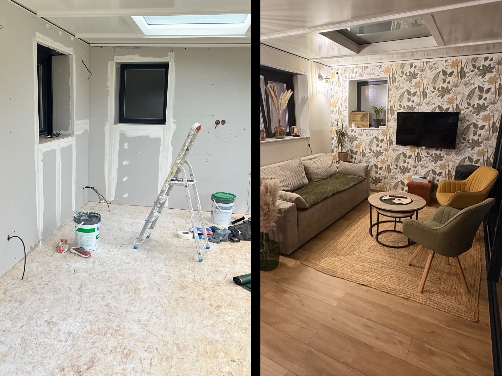
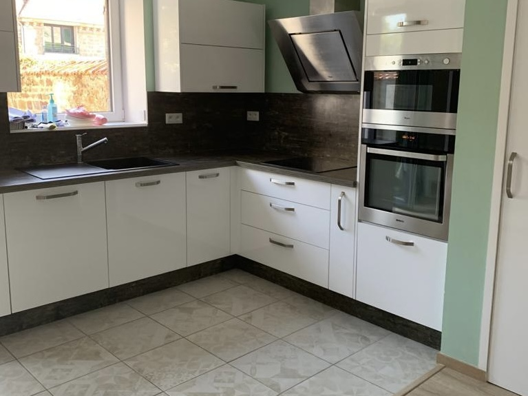

Artisan qualifié RGE · Flers, Orne
Placo, isolation et rénovation intérieure à Flers
Cloisons, faux plafonds, isolation et aménagement intérieur : BATIORNE prend en charge vos travaux de la préparation aux finitions. Un seul interlocuteur, un chantier propre et des délais tenus.
- Devis gratuit
- Garantie décennale
- Qualifié RGE



Nos prestations
Tout l'intérieur de votre maison, par un seul artisan
Isolation thermique et phonique
Murs, combles et sols : moins de déperditions, plus de confort, des factures qui baissent.
Voir les réalisations →
Placo et cloisons
Cloisons droites et solides, doublages, bandes et enduits soignés, prêts à peindre.
Voir les réalisations →
Faux plafonds
Plafonds plats et nets, éclairage intégré, volumes corrigés et isolation renforcée.
Voir les réalisations →
Rénovation et aménagement intérieur
Redistribution des pièces, rafraîchissement complet, finitions jusqu'au sol.
Voir les réalisations →Aussi : plancher terrasse composite et suivi et coordination de chantier. Tous nos services →
Avant / après
Nos chantiers parlent pour nous
Des photos de nos propres chantiers, à Flers et dans l'Orne.
Simple et clair
Votre projet en 4 étapes
-
1
Vous nous contactez
Par téléphone ou via le formulaire, en quelques lignes.
-
2
Visite et devis gratuit
Nous étudions votre projet sur place et vous remettons un devis détaillé.
-
3
Réalisation des travaux
Chantier propre et organisé, suivi régulier, planning respecté.
-
4
Finitions et réception
Nous vérifions ensemble chaque détail avant de vous rendre les clés.
Aides de l'État
Réduisez le coût de vos travaux d'isolation
BATIORNE est qualifiée RGE (Reconnu Garant de l'Environnement). Selon votre situation, vos travaux d'isolation peuvent ouvrir droit à MaPrimeRénov', aux aides de l'ANAH ou aux certificats d'économies d'énergie (CEE).
Nous vous aidons à identifier les aides possibles et à constituer votre dossier.
Vérifier mon éligibilitéQuestions fréquentes
Vous vous posez peut-être ces questions
Le devis est-il payant ?
Non, le devis est gratuit et sans engagement. Nous venons voir votre projet sur place puis vous remettons un devis détaillé.
Où intervenez-vous ?
À Flers et dans les communes voisines de l'Orne : Saint-Georges-des-Groseillers, Messei, La Lande-Patry, Briouze et alentours.
Puis-je bénéficier d'aides pour mes travaux d'isolation ?
BATIORNE est qualifiée RGE. Selon votre situation, vos travaux d'isolation peuvent ouvrir droit à MaPrimeRénov', aux aides de l'ANAH ou aux certificats d'économies d'énergie (CEE). Nous vous aidons à y voir clair et à constituer votre dossier.
Quels délais prévoir ?
Les délais dépendent de la surface et de la complexité du chantier. Un planning précis vous est communiqué dès la validation du devis, et il est respecté.
Les travaux sont-ils garantis ?
Oui, les travaux BATIORNE sont couverts par une garantie décennale.
Un projet de placo, d'isolation ou de rénovation ?
Parlez-nous de votre projet : devis gratuit, réponse rapide.
Flers · Saint-Georges-des-Groseillers · Messei · La Lande-Patry · Briouze et alentours